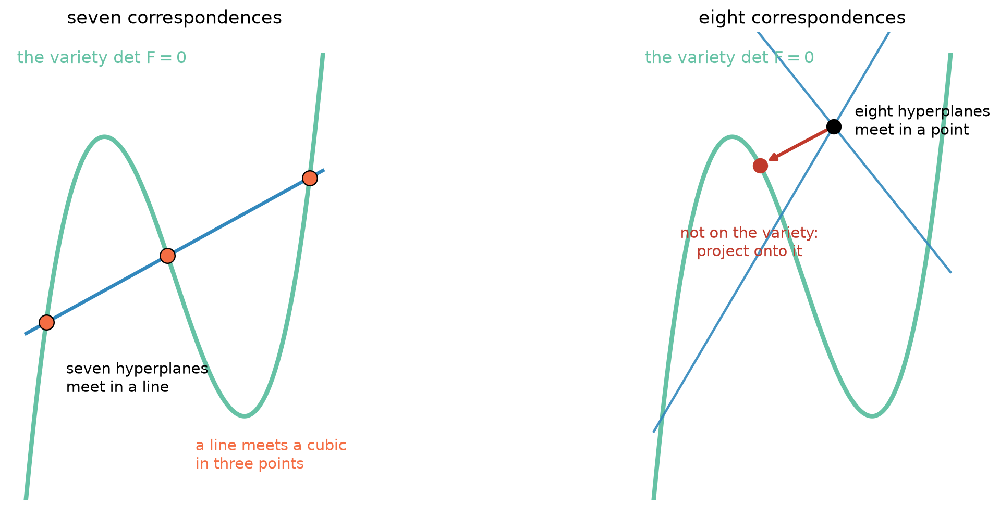
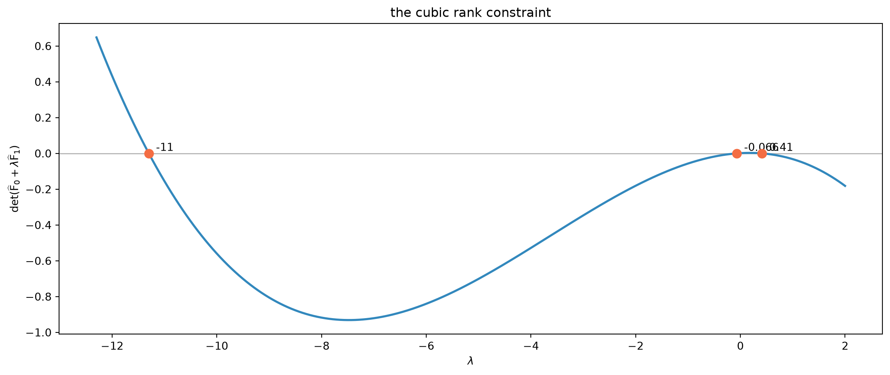
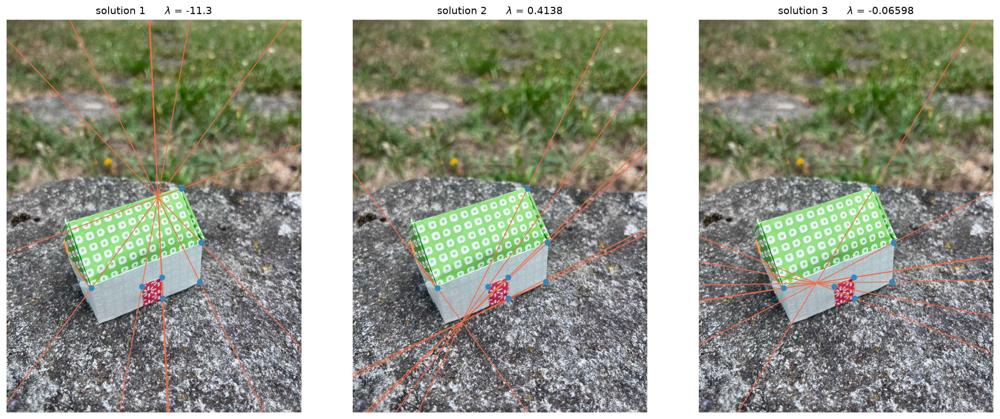
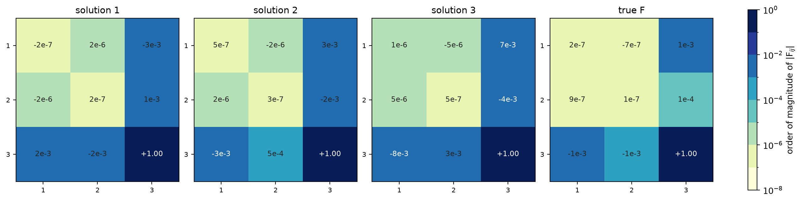
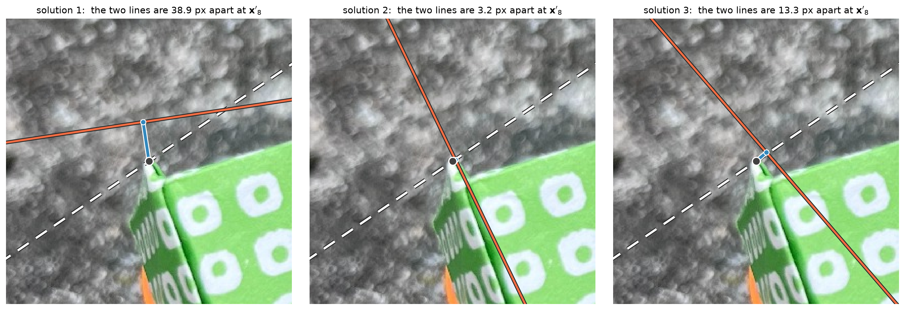
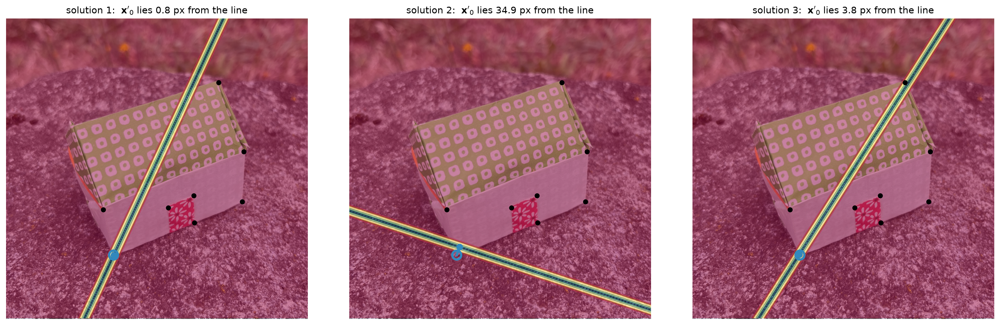
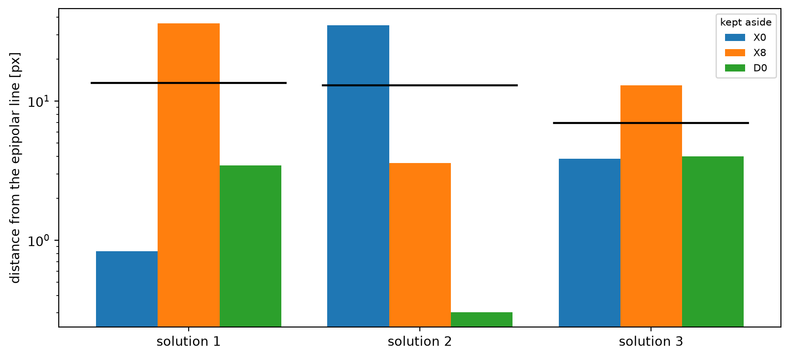

The fundamental matrix has seven degrees of freedom. In the previous notebook we paid for an eighth correspondence so that the estimation problem became linear. Here we go back and ask what happens if we use exactly seven.
The answer is the reason the seven-point algorithm is a minimal solver: seven correspondences leave a two-dimensional null space, hence a pencil of matrices. The rank-two constraint then cuts that pencil with a cubic equation, leaving one or three real fundamental matrices.
Seven correspondences
Each correspondence \(\{\mathbf{x}_i, \mathbf{x}_i'\}\) still gives the same linear equation
With seven correspondences the design matrix \(\mathsf A\) has size \(7\times9\). For points in general position it has rank seven, so its right null space has dimension two (seven linear constraints cannot select a single point of \(\mathbb P^8\)).
We work with the same noisy image correspondences used on the real images in the eight-point notebook. Among them we pick a well-conditioned subset of seven.
def design_matrix(x, xp):"""One row per correspondence: (x' tensor x)^T vec(F) = 0.""" u, v = x[:, 0], x[:, 1] up, vp = xp[:, 0], xp[:, 1]return np.column_stack([up*u, up*v, up, vp*u, vp*v, vp, u, v, np.ones(len(x))])def normalize_points(x):"""Centroid to the origin, mean distance to the origin equal to sqrt(2).""" c = x[:, :2].mean(axis=0) d = np.linalg.norm(x[:, :2] - c, axis=1).mean() s = np.sqrt(2.0) / d T = np.array([[s, 0, -s*c[0]], [0, s, -s*c[1]], [0, 0, 1.0]])return (T @ x.T).T, Tdef subset_score(c): idx =list(c) xn, _ = normalize_points(xr[idx]) xpn, _ = normalize_points(xpr[idx]) s = np.linalg.svd(design_matrix(xn, xpn), compute_uv=False)return s[-1] / s[0]best7 =max(itertools.combinations(range(len(rid)), 7), key=subset_score)idx7 =list(best7)SEVEN_IDS = [rid[i] for i in idx7]idx_rest = [i for i inrange(len(rid)) if i notin idx7]REST_IDS = [rid[i] for i in idx_rest]x7, xp7 = xr[idx7], xpr[idx7]x_rest, xp_rest = xr[idx_rest], xpr[idx_rest]print("seven-point sample:", " ".join(SEVEN_IDS))print("kept aside :", " ".join(REST_IDS))print(f"sigma_7 / sigma_1 = {subset_score(best7):.2e}")
Figure 1: The seven noisy correspondences used to run the solver, in orange, and in blue the ones kept aside.
A pencil of fundamental matrix
Normalize the points exactly as in the eight-point algorithm and look at the singular values of \(\mathsf A\). There are seven non-zero singular values. The two vectors corresponding to the two zero singual values span the null space:
\[
\ker\mathsf A = \operatorname{span}(\widehat{\mathsf F}_0,
\widehat{\mathsf F}_1).
\]
therefore satisfies all seven epipolar equations. Most members of this pencil, however, have rank three and thus are not fundamental matrices.
x7n, T = normalize_points(x7)xp7n, Tp = normalize_points(xp7)A7 = design_matrix(x7n, xp7n)U, s7, Vt = np.linalg.svd(A7)F0h = Vt[-2].reshape(3, 3)F1h = Vt[-1].reshape(3, 3)print("shape of A:", A7.shape)print("rank of A :", np.linalg.matrix_rank(A7))print("singular values:", np.round(s7, 5))print("dimension of the right null space: 2")
shape of A: (7, 9)
rank of A : 7
singular values: [7.4974 6.7286 3.4193 2.5073 1.3228 0.4769 0.0337]
dimension of the right null space: 2
What’s happening in \(\mathbb{P}^8\)
Let’s consider the whole construction at once in convenient higher dimensional spaces.
A \(3\times3\) matrix up to scale is a point of \(\mathbb P^8\). Not every point in this space is a fundamental matrix: it must also satisfy \(\det\mathsf F = 0\), a single equation, cubic in the entries of \(\mathsf F\). The fundamental matrices therefore form a cubic hypersurface in \(\mathbb P^8\), of dimension seven. The cartoon illustration in Figure 2 attempts to illustrate our high-dimensional setup on the plane.
Each correspondence contributes one linear equation in the entries of \(\mathsf F\), that is, a hyperplane of \(\mathbb P^8\). Seven correspondences in general position give seven independent hyperplanes, and seven hyperplanes in \(\mathbb P^8\) meet in a line, since \(8 - 7 = 1\). That line is exactly the pencil \(\widehat{\mathsf F}_0 + \lambda\widehat{\mathsf F}_1\), with \(\lambda\) a coordinate along it.
So the seven-point problem reads: intersect a line with a cubic hypersurface. A line meets a hypersurface of degree \(d\) in \(d\) points, counted with multiplicity and over the complex numbers. Here \(d = 3\). The cubic in \(\lambda\) we are about to write down is the degree of the variety we are cutting.
This also says something about the eight-points algorithm. Eight correspondences give eight hyperplanes, which meet in a single point of \(\mathbb P^8\), and a point singled out by linear conditions has no reason to lie on the cubic. That is precisely what the rank-two enforcement was doing there: the eight-point algorithm lands just off the variety, and the truncated SVD pushes it back on. Seven points land on a line that genuinely crosses the variety; eight points land beside it and have to be projected.

Figure 2: Cartoon illustration, drawn in the plane rather than in \(\mathbb P^8\): a cubic curve stands in for the cubic hypersurface \(\det\mathsf F = 0\), and lines stand in for hyperplanes. The counting is the same one dimension at a time: in \(\mathbb P^2\) two lines meet in a point and one line meets a cubic in three points, exactly as in \(\mathbb P^8\) seven hyperplanes meet in a in a line that cuts the variety three times, while eight hyperplanes meet in a point. Left: the seven-point algorithm lands on a line that crosses the variety, and every crossing is a candidate. Right: in presence of noise the eight-point algorithm lands beside the variety and the rank-two enforcement projects it back.
Rank two turns into a cubic
The missing piece is the defining constraint of a fundamental matrix,
Every entry is linear in \(\lambda\), so the determinant is a polynomial of degree at most three. This is the only nonlinear step of the seven-point algorithm.
def det_cubic(F0, F1):"""Coefficients c0..c3 of det(F0 + lambda F1), in ascending order.""" p = [[np.array([F0[i, j], F1[i, j]], float) for j inrange(3)]for i inrange(3)] mul = np.polynomial.polynomial.polymul add = np.polynomial.polynomial.polyadd sub = np.polynomial.polynomial.polysub m00 = sub(mul(p[1][1], p[2][2]), mul(p[1][2], p[2][1])) m01 = sub(mul(p[1][0], p[2][2]), mul(p[1][2], p[2][0])) m02 = sub(mul(p[1][0], p[2][1]), mul(p[1][1], p[2][0])) c = add(sub(mul(p[0][0], m00), mul(p[0][1], m01)), mul(p[0][2], m02))return np.pad(c, (0, max(0, 4-len(c))))[:4]def pencil_roots(c, tol=1e-12):"""Roots of c0 + c1 L + c2 L^2 + c3 L^3, with the degenerate case. When c3 vanishes the cubic drops degree: the missing root has run off to infinity, which in the pencil means F1 itself. A relative tolerance is essential — in floating point c3 comes out as 1e-18, never as exactly zero, and np.roots would happily return a root at 1e+17. """ scale = np.abs(c).max() at_infinity =abs(c[3]) < tol * scale p = c[:3] if at_infinity else c p = np.trim_zeros(np.asarray(p, float)[::-1], "f") r = np.roots(p) iflen(p) >1else np.array([])return r, at_infinitycoeff = det_cubic(F0h, F1h)roots, at_infinity = pencil_roots(coeff)real_roots = np.array([r.real for r in roots ifabs(r.imag) <1e-8])print("det(F0 + lambda F1) coefficients [c0,c1,c2,c3]:")print(coeff)print(f"root at infinity (det F1 = 0)? {at_infinity}")print("roots:")for r in roots:print(" ", r)print(f"{len(real_roots)} of them are real")
det(F0 + lambda F1) coefficients [c0,c1,c2,c3]:
[ 0.0013 0.0165 -0.0456 -0.0042]
root at infinity (det F1 = 0)? False
roots:
-11.298578464274387
0.41381116680976665
-0.06598340132282624
3 of them are real

Figure 3: The determinant along the two-dimensional null space. The seven linear equations give the pencil; the rank-two constraint picks the intersections with det(F)=0. Depending on the data, one or three of the roots are real.
Each real root gives a rank-two matrix in normalized coordinates. We carry it back to pixels with the same contravariant transformation used by the normalized eight-point algorithm,
\[
\mathsf F = \mathsf T'^\top\widehat{\mathsf F}\mathsf T.
\]
On exact data every candidate must fit the seven chosen correspondences exactly. Only one of them, however, is the fundamental matrix of the cameras that made the images.
def F_from_cameras(P, Pp):"""Fundamental matrix induced by a pair of projective cameras.""" Ch = np.linalg.svd(P)[2][-1] ep = Pp @ Chreturn unit_F(skew(ep) @ Pp @ np.linalg.pinv(P))F_true = F_from_cameras(P, Pp)Fs, lambdas = [], []for r in roots:ifabs(r.imag) >1e-8:continue Fh = F0h + r.real * F1h Fs.append(unit_F(Tp.T @ Fh @ T)) lambdas.append(r.real)if at_infinity: # the missing root: F1 on its own Fs.append(unit_F(Tp.T @ F1h @ T)) lambdas.append(np.inf)for j, (F, lam) inenumerate(zip(Fs, lambdas), 1):print(f"solution {j}: lambda={lam: .6f} rank={np.linalg.matrix_rank(F)} "f"max residual on the seven={symmetric_epipolar_residual(F, x7, xp7).max():.2e} px")
solution 1: lambda=-11.298578 rank=2 max residual on the seven=2.87e-12 px
solution 2: lambda= 0.413811 rank=2 max residual on the seven=9.52e-13 px
solution 3: lambda=-0.065983 rank=2 max residual on the seven=3.29e-12 px

Figure 4: Every real root gives a valid epipolar geometry: each pencil of lines passes exactly through the seven points it was built from, and they are the same seven points in all three panels. Only the epipole moves. On these seven correspondences the three candidates are indistinguishable, which is why no quality number is shown here — we need data they have not seen.
Which of the three solutions?
Every candidate reproduces the seven correspondences exactly, so the residuals on those seven are zero for all of them and tell us nothing. We need a criterion from somewhere else. Let us take three, in order of how much they cheat.
Cheating: chordal distance
We do know \(\mathsf F\) here, so for a moment, we can cheat and use the chordal distance of each candidate from it.
print(f"{'':14s}{'chordal':>12s}{'lines [px]':>14s}")for j, F inenumerate(Fs, 1):print(f"solution {j:<6d}{projective_F_distance(F, F_true):12.2e}")
The three chordal distances sit within a few per cent of one another, which would suggest the candidates are nearly equivalent.

Figure 5: The three candidates and the true matrix, each normalised to unit Frobenius norm and sign-aligned with the true one. Colour is the order of magnitude of each entry, one shade per decade. All four show the same three tiers: a top-left block around \(10^{-7}\), a last row and column around \(10^{-3}\), and a bottom-right entry of one. To the eye they are the same object — and to the Frobenius norm they very nearly are.
In pixel coordinates the entries of a fundamental matrix live on very different scales, for the same reason the design matrix did in the eight-point notebook: the homogeneous coordinate \(1\) sits next to pixel values in the thousands, so the coefficient multiplying \(u\,u'\) has to be some \(f^2\) times smaller than the one multiplying \(1\cdot 1\) for the two terms to balance. Once normalised, the top-left \(2\times2\) block is of order \(10^{-7}\), the last row and column of order \(10^{-3}\), and the bottom-right entry is one. That hierarchy is the same for every fundamental matrix of this pair of images, whatever epipolar geometry it describes — which is why, entry by entry, the four matrices look like the same object.
The Frobenius norm knows nothing of that hierarchy: it weights every entry alike. So the chordal distance is decided almost entirely by the last row and column, and is essentially blind to the \(2\times2\) block — which is precisely what sets the direction of the epipolar lines. A small chordal distance therefore does not certify a good epipolar geometry, and the ranking it induces is not one to rely on.
None of this is an argument against \(\mathsf F\) being a point of \(\mathbb{P}^8\). It is an argument against measuring there. It is better to consider distances defined in the images.
Cheating a little less: compare the epipolar lines
Still using the true matrix, but asking the question in the images. Both matrices predict an epipolar line for the same point \(\mathbf{x}\); how far apart are those two lines, where the data actually is?
def line_gap(F, G, x, xp):"""How far apart, in pixels, are the epipolar lines of two matrices — measured at the correspondences, which is where the data is. For each pair, walk from the measured point x' onto the line that G predicts (that is the foot q), then ask how far q lies from the line that F predicts. One perpendicular segment per correspondence; the figure below draws it. """ Lg = (G @ x.T).T Lg = Lg / np.linalg.norm(Lg[:, :2], axis=1, keepdims=True) q = xp.copy() q[:, :2] = xp[:, :2] - np.sum(xp * Lg, axis=1)[:, None] * Lg[:, :2] Lf = (F @ x.T).T Lf = Lf / np.linalg.norm(Lf[:, :2], axis=1, keepdims=True)return np.abs(np.sum(q * Lf, axis=1))

Figure 6: How two epipolar geometries are compared, for one correspondence, at the pixel scale. The white dashed line is what the true matrix predicts for \(\mathbf{x}\), the orange line is what the candidate predicts, and the dot is the foot of the measured \(\mathbf{x}'\) on the true line — the two are a pixel or two apart, which is the annotation error. The blue segment is what we measure: how far that foot lies from the candidate’s line. All three panels are at the same scale, so the segments can be compared directly.
Now the three candidates separate clearly, and in an order that the chordal distance did not give. But we are still using \(\mathsf F\), which in any real situation we do not have.
In practice use the correspondences kept aside (no cheating)
The correspondences kept aside played no part in the estimate. They can speak now: the true fundamental matrix must fit them too, while a spurious root of the cubic has no reason to. This is the criterion that survives outside a notebook, and it is what a robust estimator does with hundreds of matches instead of three.
Seven points create candidates; further correspondences disambiguate and stabilise the estimate.
# One quantity throughout this section: how far each of the correspondences# kept aside lies, in view 2, from the epipolar line a candidate predicts.rest_res = np.array([euclidean_epipolar_residuals(F, x_rest, xp_rest)[1] for F in Fs])rest_mean = rest_res.mean(axis=1)hdr ="".join(f"{k:>10s}"for k in REST_IDS)print(f"{'':12s}{hdr}{'mean':>10s}")for j, row inenumerate(rest_res, 1):print(f"solution {j:<3d}"+"".join(f"{v:10.2f}"for v in row) +f"{row.mean():10.2f}")print("\ndistances from the epipolar line in view 2, in pixels")
X0 X8 D0 mean
solution 1 0.83 36.30 3.43 13.52
solution 2 34.93 3.59 0.30 12.94
solution 3 3.83 12.95 4.01 6.93
distances from the epipolar line in view 2, in pixels

Figure 7: What a correspondence kept aside says about each candidate. The blue circle is the point \(\mathbf{x}'_i\) in view 2, and the blue segment is its distance from the epipolar line that the candidate predicts for it. The shading is that same distance evaluated at every position of view 2, with contours at 1, 2, 5, 10 and 20 pixels. Black dots are the seven seven points used for the estimate, which every candidate fits exactly.

Figure 8: The same distances for every correspondence kept aside, on a logarithmic scale, with the black ticks marking the mean of each candidate. One candidate sits at the level of the annotation noise on all of them; the others miss at least one badly.
With exact data one candidate would fit the unused correspondences perfectly and the others would not fit them at all. With clicked points the separation is not between zero and something, but between the annotation noise and something much larger, which is all a robust estimator ever gets to work with. Note also that a single correspondence is not always decisive: read the whole group, not one bar.
The algorithm
All the pieces can now be wrapped in a minimal solver. There is one important difference from the eight-point algorithm: the output is a list. A minimal solver is allowed to return several models.
def seven_point(x, xp, imag_tol=1e-8, dedup_tol=1e-7):"""Return all real fundamental matrices from exactly seven correspondences."""iflen(x) !=7orlen(xp) !=7:raiseValueError("the seven-point solver needs exactly seven correspondences") xn, T = normalize_points(x) xpn, Tp = normalize_points(xp) _, _, Vt = np.linalg.svd(design_matrix(xn, xpn)) F0, F1 = Vt[-2].reshape(3, 3), Vt[-1].reshape(3, 3) roots, at_infinity = pencil_roots(det_cubic(F0, F1)) candidates = [F0 + r.real * F1 for r in roots ifabs(r.imag) <= imag_tol]if at_infinity: candidates.append(F1) solutions = []for Fh in candidates: F = unit_F(Tp.T @ Fh @ T)ifnotany(projective_F_distance(F, G) < dedup_tol for G in solutions): solutions.append(F)return solutionsFs_check = seven_point(x7, xp7)print(f"returned {len(Fs_check)} real solution(s)")
returned 3 real solution(s)
One root or three
The cubic has three roots over \(\mathbb C\), but a real cubic can have either one real root or three. Both cases occur, and we do not need to invent data to see it: among all the ways of choosing seven of the clicked correspondences, some give three real fundamental matrices and some give a single one.
When there is only one real root the minimal solver is, in a sense, lucky: the ambiguity is there over the complex numbers, but the two spurious candidates are not available to confuse a real algorithm.
counts = {}for c in itertools.combinations(range(len(rid)), 7): idx =list(c) xn, _ = normalize_points(xr[idx]) xpn, _ = normalize_points(xpr[idx]) Vt = np.linalg.svd(design_matrix(xn, xpn))[2] r, _ = pencil_roots(det_cubic(Vt[-2].reshape(3, 3), Vt[-1].reshape(3, 3))) k =sum(1for z in r ifabs(z.imag) <1e-8) counts[k] = counts.get(k, 0) +1for k insorted(counts):print(f"{counts[k]:4d} of the {sum(counts.values())} seven-point subsets "f"give {k} real solution(s)")
26 of the 120 seven-point subsets give 1 real solution(s)
94 of the 120 seven-point subsets give 3 real solution(s)
Where the seven-point solver is used
Where the seven-point solver is used
With noisy data, seven correspondences should not be treated as a statistically complete estimate of \(\mathsf F\). The solver is most useful as a minimal hypothesis generator inside a robust estimator: sample seven matches, generate one or three candidates, score each candidate on all the data, and keep the one with the best support.
That is why the count of points matters so much in practice. A robust estimator has to draw a sample in which every point is an inlier, and the probability of that decays exponentially with the sample size — so seven points instead of eight is not a curiosity, it is a smaller exponent. The same idea has produced solvers that shrink the sample further by exploiting whatever is known in advance: a vertical direction from an IMU, planar motion, a shared focal length, a known rotation axis.
Each of those variants is a different system of polynomial equations, and here the subject stops being about images. Building a fast solver means eliminating variables from a polynomial system, and a substantial line of work has grown around doing that automatically: Gröbner-basis and action-matrix generators, the choice of a good linear basis, syzygy-based reduction, sparse resultants, numerical homotopy continuation, and most recently learning which homotopy path to follow so that the spurious solutions are never computed at all. There is also work on the prior question of which configurations of points and lines constitute a minimal problem in the first place: a classification problem in algebraic geometry.
So the seven-point algorithm is a small instance of a large family of method that are still investigated by the computer vision community.
Further reading
Hartley, R. and Zisserman, A. Multiple View Geometry in Computer Vision, 2nd ed., Cambridge University Press, 2004. Section 11.1 for the seven- and eight-point algorithms.
Hartley, R. “In defense of the eight-point algorithm”, IEEE TPAMI 19(6),
The normalisation used here is the same one used in the previous notebook.
On minimal solvers at large:
- Kukelova, Z., Bujnak, M. and Pajdla, T. “Automatic generator of minimal problem solvers”, ECCV, 2008. The idea that solvers can be produced by a machine rather than by hand. - Hrubý, P., Duff, T., Leykin, A. and Pajdla, T. “Learning to solve hard minimal problems”, CVPR, 2022. Homotopy continuation with a learned starting point, so that the spurious solutions are never followed. - PoseLib, https://github.com/PoseLib/PoseLib. A collection of the solvers in current use, worth reading as an atlas of the family.